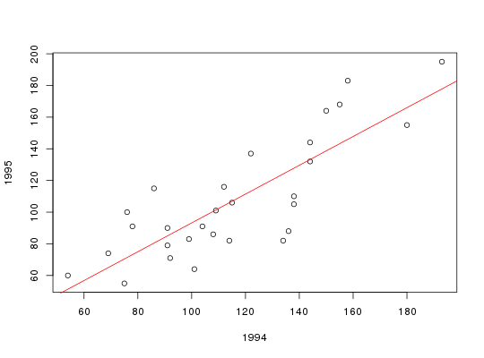

Data for Exercise 2.14, 2.17, 2.31, 2.33, and 2.40
A data frame with 29 observations on the following 3 variables.
Acura BMW
Buick Cadillac Chevrolet Dodge Eagle
Ford Geo Honda Hyundai Infiniti
Jaguar Lexus Lincoln Mazda Mercedes-Benz
Mercury Mitsubishi Nissan Oldsmobile
Plymouth Pontiac Saab Saturn Subaru
Toyota Volkswagen VolvoKitchens, L. J. (2003) Basic Statistics and Data Analysis. Duxbury
str(Jdpower)#> 'data.frame': 29 obs. of 3 variables: #> $ Car : Factor w/ 29 levels "Acura","BMW",..: 12 14 1 10 27 17 2 9 20 29 ... #> $ X1994: int 75 54 101 92 69 91 114 134 99 108 ... #> $ X1995: int 55 60 64 71 74 79 82 82 83 86 ... #>attach(Jdpower) plot(X1994,X1995)model <- lm(X1995~X1994) abline(model)model#> #> Call: #> lm(formula = X1995 ~ X1994) #> #> Coefficients: #> (Intercept) X1994 #> 2.2241 0.9098 #> #>cor(X1995,X1994)#> [1] 0.8220294 #>detach(Jdpower)